Somatic well-being practice or self-love coaching

What is somatic well-being practice?
A Somatic well-being practice session consists of laying down in a comfortable position, followed by a guided breathing exercise to bring the nervous system into the parasympathetic and encourage feelings of safety in the body. I will then guide you to feel emotions present in the body, which will be the focal point of the practice. We will use parts work, shadow work and emotional fluidity techniques.
This is the culmination of what has worked for me to increase a sense of well-being and developing a nurturing resource of internal love or “Deep Okayness”. During the session I will be drawing from different modalities such as IFS therapy, shadow work and meditation to tailor the session to your needs.
Some sessions will be IFS-dominant, some will be focused on the moment by moment sensations in the body and feeling through difficult emotions, while some will involve a cathartic emotional release through movement or anger work.
Who are you and how do you work with clients?
For the last few years I’ve predominately made a living from Software Engineering and while that’s been a fulfilling career, I’ve been consistently obsessed with the inner workings of the mind and how to live a good life.
I used to have a lot of self-doubt, worry incessantly and compare myself to my peers. But I was deeply curious and explored each affliction like a detective. For many years I devoured books and courses, experienced altered states of consciousness and sought out wisdom wherever I could find it. I tried many healing and embodiment modalities; IFS therapy, breathwork, dance and more. I trained with world-class coaches like Joe Hudson who helped me dissolve my inner critic. I healed my nervous system using a breathwork app.
Along the way I learned that many of my afflictions stemed from my lack of self-love. Somewhere deep in my psyche, unbewknonst to me, I didn’t like myself. That’s where the self-doubt and everything else stemed from. So I went on a 3-year journey to find persistent self-love. I did it and it was everything I hoped it’d be and more. You can read more about the story here.
Eventually, in the summer of 2022, something clicked in me and I started to feel well-resourced and drawn to holding space for others. Slowly I started to hold IFS sessions for friends and in October-December 2022, I got to put this into practice by running regular 1:1 sessions at a residency in Berlin; combing IFS and nervous system regulation.
More recently, I have decided to focus the sessions on self-love given how impactful it has been.
I have created a new session format that I am calling Somatic well-being practice, which is the culmination of what has worked for me to increase a sense of well-being and developing a nurturing resource of internal love.
I am not a certified therapist or coach (yet). Though I am currently undertaking an IFS training course and I have done many courses over the years that don’t come with official certifications. I bring my deep sensitivity, intuition, compassion and patience to every session. So far I have done close to 400 hours of these sessions.
Current courses I’m undertaking:
- IFS training
- MDMA facilitator training
- A year-long programme with the Art of Accomplishment (Joe Hudson)
What are the benefits of this work?
Self-love is a nurturing source of internal love that helps soften the harsh aspects of being a human in this world.
Working towards self-love which in my experience involves learning to feel one’s emotions and regulate one’s nervous system, helps with the following:
- dissolving or lessening the inner critic and self-doubt
- lessening procrastination and perfectionism
- feeling less anxious or less numb
- better connection and improved interpersonal abilities
- getting out of a triggered state or recovering from it quickly
- getting closer to a secure attachment style
You can read more about my framework for self-love which informs this coaching practice here.
Here’s what two of my favourite tweeters say about achieving self-love:
Testimonials
“anita is one of the best facilitators i have worked with. she made it easy to trust her process so i could focus on what was going on inside of me. i was grateful to have her help in guiding my attention, and especially her use of breathwork. months later i still think back to what she helped me discover in our sessions and use it for making decisions in life” — Mycelium Mage
“After following Anita’s journey into self-love and nervous system regulation for a while now, I finally had the opportunity to experience what she’s learned, and it was really, really nice. Going into it I was pretty jittery and didn’t know what to expect, but she held such a warm space and a kind presence and it helped me understand what she’s moving towards. I left the session feeling much more in tune with my body, and what it meant to love myself, and to use the breath and my feelings to take me deeper into that experience. I’ve been continuing to use what I learned in that session since, practicing box breathing and making space for my feelings and showing them affection.” — Anansi
“Anita has a really special energy. She is so warm, loving, attentive, intelligent, and clearly passionate about this work. I felt very held and cared for in our session, in which she blended IFS therapy, breathwork, and light touch into her own unique format. I think she’s a perfect fit for healing work.” - Jane Miller
“There’s a story that some of us who have met Anita tell others: when you are speaking with her it feels like she will listen and accept anything and everything you have to say. It’s something you can’t force or fake. Her countenance, persence, and empathy gives you permission and space to feel into where you are right now. Her self-love coaching sessions is the epitome of this because she is there with you to inquire where you are and allow whatever needs to pass through, pass through you. I no longer have to be scared or lost in discovering things about myself anymore, knowing Anita will be there when I need her to be.” — Minnow Park
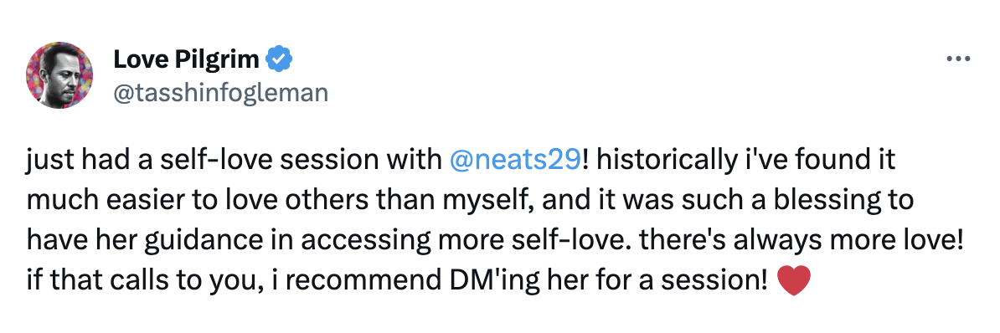
![review of my somatic self-love coaching with
@neats29 :It was psychoactive. Anita quickly set the stage and got me out of my head (impressive!). We then identified 3 parts of myself in different areas of my body: a toddler, an 8 year-old and an awkward teen. I talked to them and listened to them and told them how old I was and that I could take care of us now. It was beautiful. I cried, I writhed and at one point I’m pretty sure I accessed the jhanas (bonus!). Anita’s approach was gentle and insightful and I recommend her 100%.](./index/nat.png)
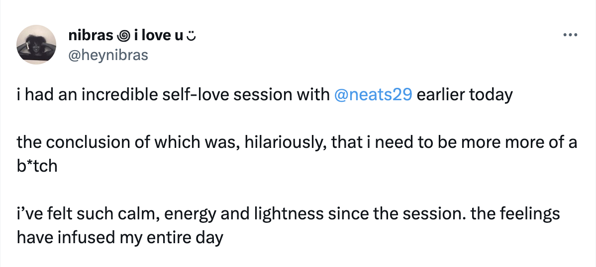
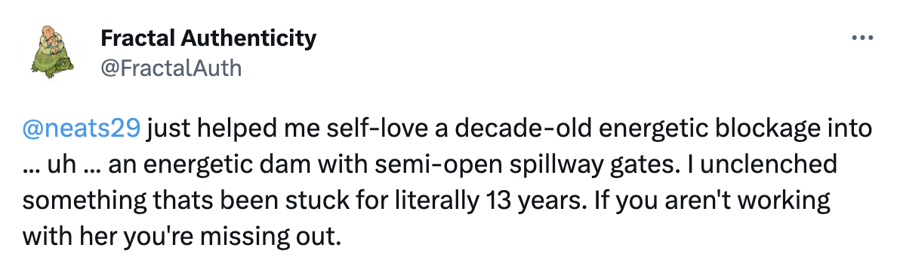
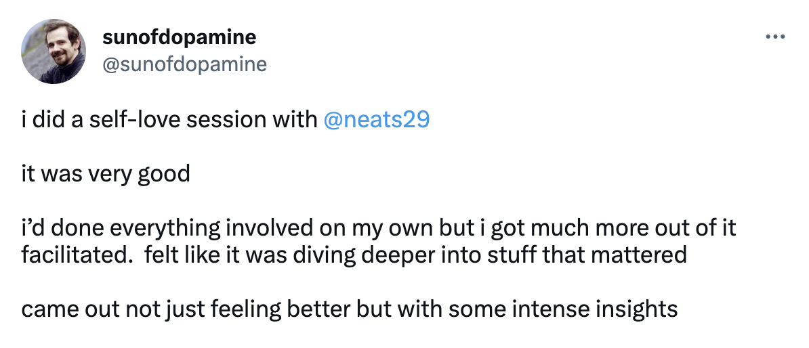
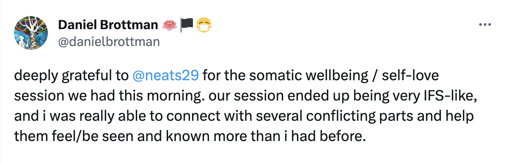
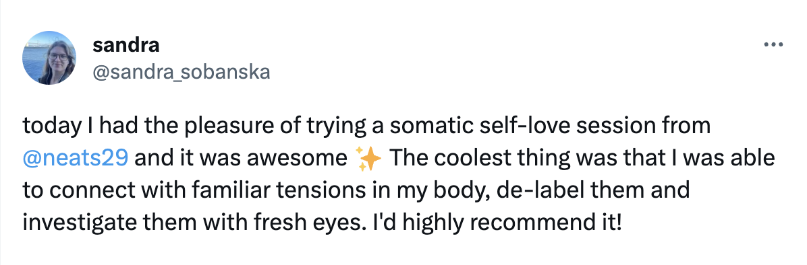
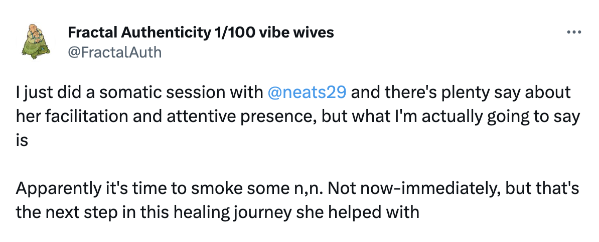
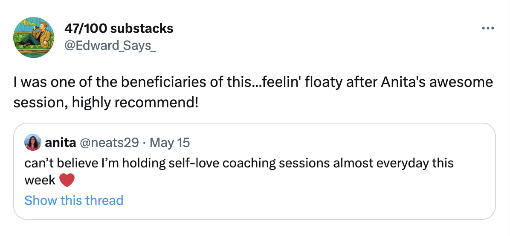
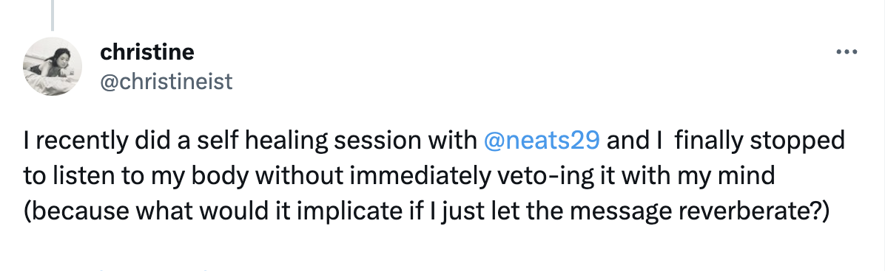
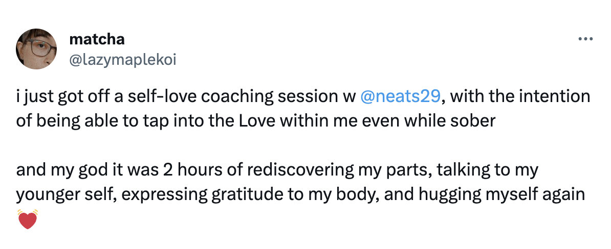
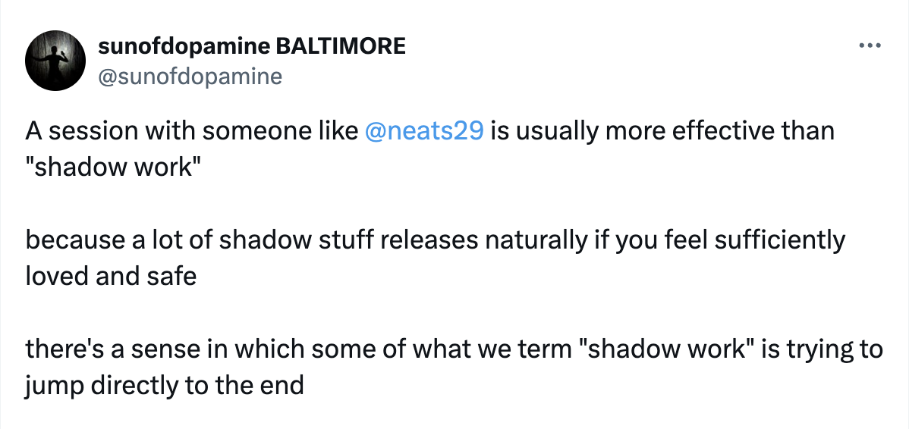
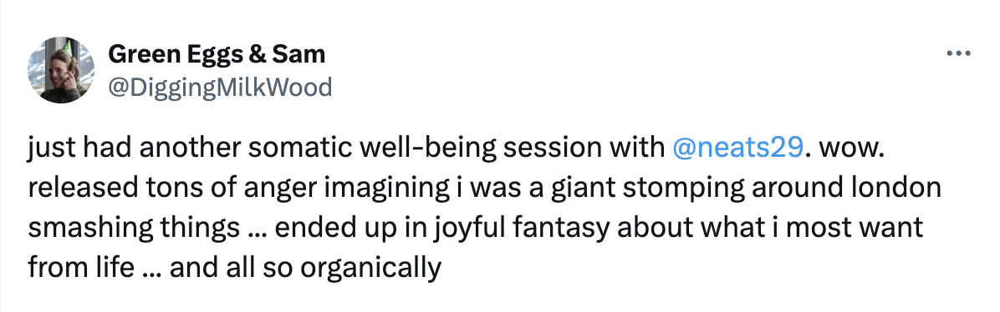
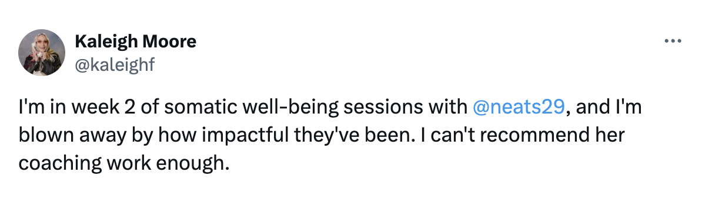
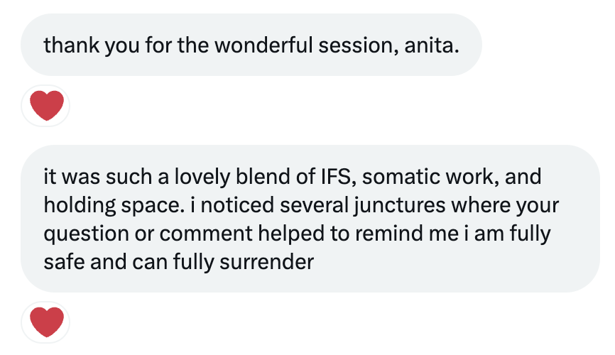
Benjamin Haynes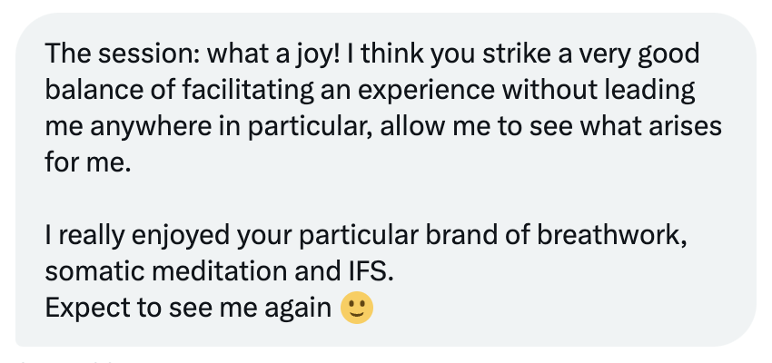
Panashe M. Fundira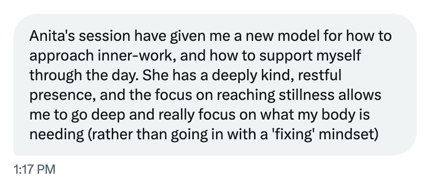
@EgregoreGaloreHow can I book a session?
There are broadly two ways of working together:
Ongoing Exploration: a timeboxed or open-ended series of sessions for those looking to dive deeper and explore their parts and emotions. Regular clients report increased emotional fluidity, a greater capacity to be with difficult emotions and more compassion for themselves.
Here’s a client describing the specific benefits they gained by working with me over the space of a few months:
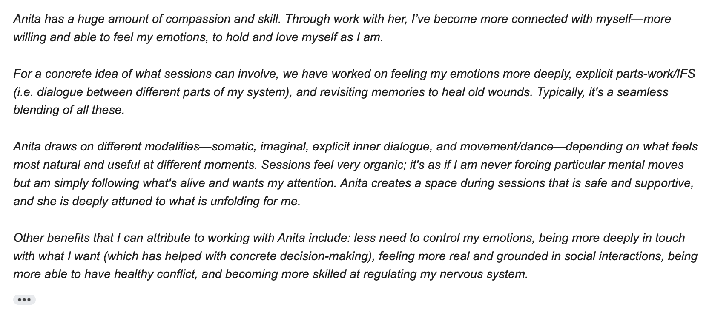
- One-off Experience: for those looking to experience this flavour of inner work. It’s an opportunity to connect with your internal parts and work with difficult emotions, or even deepen into pleasurable ones. The purpose is to get a taste for the session and see if you’d like to continue working together.
You may book an intro call where we will discuss working together and book your first call. Alternatively, you may DM me on twitter with any questions or to request a booking link if you’d like to book a one-off session without an intro call.
Sessions are done on a video call.
Session duration: 1hr30mins on average
Sliding Scale: £75—£100
How can I best prepare for a session?
Most sessions are done laying down (bed/sofa/floor etc) to enable deep relaxation. Please arrange this before the session so that the laptop camera is pointing towards you to show your face and torso. We will have a brief chat at the start of the call and then I will invite you to lay down. Most people remain in this position for the rest of the session, however you are welcome to move however you like during the session. If that is not at all feasible, then you may do the session sitting down in a comfortable seat.
Please wear a pair of headphones so I can hear you well, when laying down away from the laptop, the sound can become muffled.
It’s best not to have a hard stop after the session to allow a gentle transition into the rest of your day
Self-love guided meditation
Podcast appearances
If you’d like to hear more about my self-love journey and this work, you can listen to The Examined Life podcast with Khe Hy.
If you have any questions, please send me message on twitter.